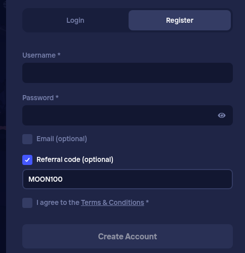

Quick answer: Use MOON100 as your Duel referral code. It goes into the Referral code (optional) checkbox on the Duel.com Register form, which opens a text box, during registration, before you press Create Account. Type it in capitals with no spaces. It is set up for the current Duel terms for referred accounts.
MOON100
Checked November 2026.
Duel.com is a crypto casino and sportsbook. New users can enter a referral code on the registration form, and MOON100 is ours.
The benefit is whatever Duel.com currently attaches to referred accounts; Duel sets those terms.
The code is spelled M-O-O-N-1-0-0: M, two letter Os, N, then the number one hundred (zeros, not letters). People also search for it as the Duel invite code. It is the same code in the same box.
Use the Referral code (optional) checkbox on the Duel.com Register form, which opens a text box. Fill it in before the final button.

Duel keeps the form short by hiding optional fields. The Referral code (optional) line is a checkbox; until you tick it there is nowhere to type. Once ticked, a text box appears right under it.
The Email (optional) checkbox works the same way, so make sure you ticked the referral one, not the email one, before you type MOON100.
Usually not. Referral codes are a registration step on Duel, so enter MOON100 before you create the account.
On a phone the Register form shows Username and Password first; the Referral code (optional) checkbox is below them. Tick it so the text box appears, then type MOON100.
Common mistakes:
MOON100 is meant for people opening a new Duel account. If you already have one, the code will not be added to it.
Use one account per person. Opening extra accounts to reuse a code usually breaks Duel's terms and can get accounts closed.
Duel can change or end its referral terms at any time. Its own site is the final word on what applies today.
You must be 18 or older, and online gambling must be legal where you live.
MOON100. Enter it in the Referral code (optional) box during registration, before you press Create Account.
Enter the code on the Register form first. Signing in with a social button can skip the referral step.
Use capitals with no spaces: MOON100.
No. We are independent; check Duel's current terms on its own site.
Whatever Duel.com currently attaches to referred accounts. Duel sets those terms, so read the offer on its own site rather than trusting a number on a third-party page.
It is hidden until you tick the Referral code (optional) checkbox on the Register form.
18+ only. Gambling involves real financial risk; only play where online gambling is legal for you, set a budget before you start, and stop if it stops being fun.
Disclosure: MOON100 is our referral code, so we may earn a commission. It costs you nothing extra.